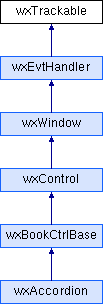

wxAccordion
Main Page
Classes
Files
Class List
Class Hierarchy
Class Members
Public Member Functions
|
List of all members
wxTrackable Class Reference
Inheritance diagram for wxTrackable:

Public Member Functions
void
AddNode
(
wxTrackerNode
*prn)
void
RemoveNode
(
wxTrackerNode
*prn)
wxTrackerNode
*
GetFirst
() const
Generated on Tue Oct 13 2015 14:09:07 for wxAccordion by
Doxygen
1.8.2
 Inheritance diagram for wxTrackable:
Inheritance diagram for wxTrackable: